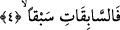
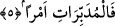

4. Yarıştıkça yarışanlara
Bu son cümle bir önceki âyetteki “es-sabihât” kelimesi üzerine fâ harfi ile
atfedilmiştir. Bundan maksad, yüzme fiilinden sonra hemen hiç vakit geçirmeksizin
yarışma fiilinin gelmiş olduğunu vurgulamaktır. Aslında yarışan ve yüzen melek aynı
melektir. “Sebkan” kelimesi masdar olup aynı şekilde mef’ûl-i mutlaktır. Buna göre
âyet-i kerimeye mânâ vermek gerekirse “kendilerine emrolunan işe yarıştıkça
yarışanlara...” demek olur. Bir başka ifâdeyle “emrolunan ve yapılması kendilerine
bırakılan işlere hızla ulaşanlara” demek olur. Buna göre “sebk/yarışmak”, meleklerin
emrolundukları işe hızla koyulmaları anlamının kinâyeli anlatımıdır. Kinâyenin ilgisini
şöyle kurabiliriz. Yarışmak; yürümekte ve yol almakta öne geçmek demektir. İşte bu öne
geçmek, hızlı yürümenin sonuçlarından birisidir. Ancak buradaki yarışta geçilen
birisinin olması gerekmez. Çünkü burada önüne geçilen, yarışta geri bırakılan hiç kimse
yoktur.
5. İş düzenleyenlere
Bu son âyet-i kerime yukarda geçen “sabikât” kelimesi üzerine fâ harfi ile
atfedilmiştir. Tâ ki bu harf, iş düzenlemenin yarışmadan hiç zaman kaybetmeksizin
hemen sonra geldiğine delâlet etsin.
Müdebbirât kelimesinin masdarı olan tedbir, işlerin âkıbetini ve sonunu
derinlemesine düşünmek demektir. Aynı âyette yer alan emran ise el-müdebbirât
kelimesinin mef’ûlüdür.
Rağıb’ın ifâdesine göre bu iş düzenleyen melekler işleri düzene koymakla
görevlendirilen meleklerdir. Bir başka ifâdeyle bunlar; kulların dünyevî ve âhirete dâir
bütün işlerini hiçbir aşırılığa kaçmaksızın ve kusur etmeksizin -kendilerine çizildiği
biçimde- düzenleyen meleklerdir. Buraya kadar yemin edilerek pekiştirilen gerçeğe
gelince bu gerçek dirilme gerçeğidir. Yani “yemin olsun söküp çıkaranlara, yavaşça
çekenlere...” dendikten sonra “siz öldükten sonra diriltileceksiniz” denmiş oluyor.
Yeminin cevabının bu diriltilme olduğu âyetin akışında daha sonra ele alınan kıyametten
anlaşılıyor. Dirilmenin gerekçesi ise ölümün bunu gerektirdiğidir. Çünkü ölüm, yapılan
işlere mükâfât ve cezâ verilmek için öldükten sonra dirilmeyi gerektiriyor. Ta ki zulüm
ve haksızlık yeryüzünde devam edip gitmesin: “Rabbin kullara zulmedici değildir”
(Fussilet 41/46) Sanki Allah şöyle buyuruyor: Melekler ecellerin bitiminde ruhları
kabzetmek için inerler. Sonra hemen ardından yukarda zikredildiği üzere dirilme olayı
meydana gelir. Şu halde ölmeyi kabul eden bir kimsenin dirilmeyi de aynı şekilde kabul